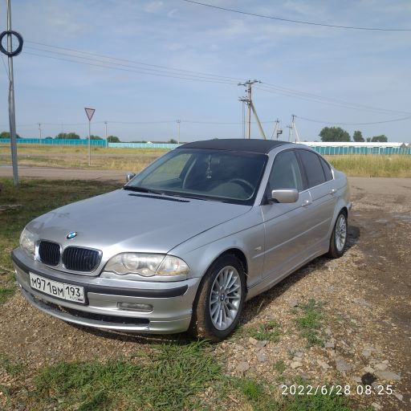
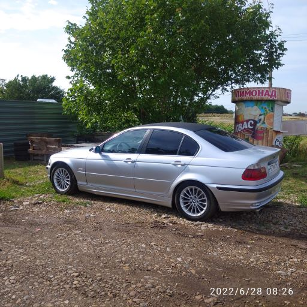
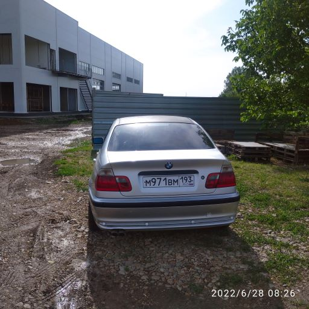

Первый автомобиль-BMW 3
настоящее немецкое качество!

Основные характеристики Объём двигателя, л 1.6 л Тип двигателя
Бензин Мощность, л.с. 105 Коробка передач Автомат Привод Задний
Длина 4481 мм Высота 1415 мм Дорожный просвет 130 мм Размеры Длина
4481 мм Высота 1415 мм Колёсная база 2725 мм Колея передняя 1481 мм
Колея задняя 1488 мм Дорожный просвет 130 мм Объём багажника 440 л
Шины и диски Размерность передних шин 195/65 R15 Размерность задних
шин 195/65 R15 Двигатель Рабочий объём 1596 см³ Количество цилиндров
4 Конфигурация двигателя Рядный Тип двигателя Бензин Мощность, л.с.
105 Обороты максимальной мощности 5500 об/мин Крутящий момент 150
Н⋅м Обороты максимального крутящего момента 3900 об/мин Трансмиссия
Коробка передач Автомат Привод Задний Эксплуатационные
характеристики Ёмкость топливного бака 63 л Подвеска и тормоза
Передние тормоза Дисковые Задние тормоза Дисковые

Технически все исправен. Кузов обновлённый. Едет бодро масло не ест
если не переваливать за 150. Хорошая комплектация. Расход 6-7 лит по
трассе по городу менше 10л. Гныли нет. Торг .

проведен полный технический осмотр автомобиля с заменой всех
технических жидкостей.
перейти к покупке